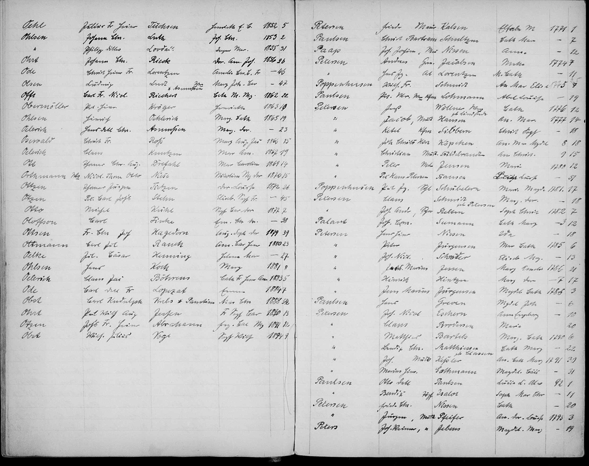
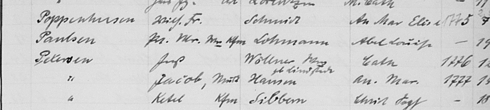

Source Books
Name Index (where match was found)
All Archives/Schleswig-Holstein/Landeskirchliches Archiv der Evangelisch-Lutherischen Kirche in Norddeutschland/Kirchenkreis Schleswig-Flensburg/Schleswig-Domgemeinde/Namensregister Trauungen 1770-1895
Chronological Register
All Archives/Schleswig-Holstein/Landeskirchliches Archiv der Evangelisch-Lutherischen Kirche in Norddeutschland/Kirchenkreis Schleswig-Flensburg/Schleswig-Domgemeinde/Trauungen 1755-1851
Match Found in Name Index
Marriage Record Reference
Name Index Match
Poppenhusen, Nic. Fr. → Schmidt, An. Mar. — 1785
Found in Namensregister Trauungen 1770-1895, page 58
Extracted Data
| Field | Value |
|---|
| Groom Surname | Poppenhusen |
| Groom Given Name | Nic[olaus] Fr[iedrich] |
| Bride Maiden Name | Schmidt |
| Bride Given Name | An[na] Mar[ia] Eler[?] |
| Year | 1785 |
| Register Reference | 7 (or possibly 9) |
Name Index — Full Page (page 58)

Click to zoom
Name Index — Poppenhusen Entry (zoomed)

Click to zoom
Notes
The name index confirms that Nicolaus Friedrich Poppenhusen married Anna Maria Schmidt at Schleswig-Domgemeinde in 1785. The reference number in the index (7 or 9) points to the entry in the chronological marriage register (Trauungen 1755-1851). The register uses an interleaved layout with 1785 and 1786 entries on facing pages with shared numbering, making the exact entry location ambiguous. Further investigation of the chronological register is needed to locate and transcribe the full marriage record.
Citation
Schleswig-Domgemeinde, Namensregister Trauungen 1770-1895, p. 58, entry for Poppenhusen, Nic. Fr. × Schmidt, An. Mar., 1785; viewed on Archion.de (https://www.archion.de/en/viewer/churchRegister/274911), 28 February 2026.